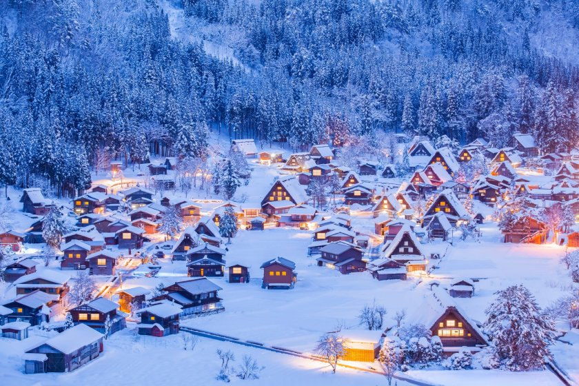

Questa giornata per noi è una festa per celebrare con voi la nostra decisione di sposarci.
Il regalo più grande e avervi con noi, passare una serata insieme e festeggiare questo giorno speciale.
Se però volete proprio regalarci qualcosa, potreste contribuire al nostro viaggio dei sogni in Giappone. O in Giapow per essere precisi.
Se invece sentite il desiderio irrefrenabile di farci un regalo materiale che ci accompagni in ogni trasloco contattateci
direttamente cosi pensiamo insieme qualcosa di trasportabile che ci farà pensare sempre a voi
Parlando di Giappone, ecco la nostra idea di viaggio di nozze.
GIAPOW è l' unione di due parole: Giappone e Powder (polvere di neve fresca).
L’Hokkaido è la mecca per gli amanti dello sci nella neve fresca.
Dovete sapere che nell'isola di Hokkaido, in Giappone, nevica in abbondanza, spesso e con una qualità di neve che non si trova da nessun'altra parte al mondo.
Le correnti freddi della siberia si incontrano con l'umidità del mare del Giappone e creano un ambiente perfetto per la formazione di neve.
Almeno una volta nella vita, ogni sciatore di neve fresca deve pagare una visita.
Le terme giapponesi sono un'esperienza unica. L'acqua calda e le temperature fredde creano un contrasto che rilassa e rigenera.
Inoltre, le terme sono un luogo di incontro e di socializzazione unico. Si narra anche che alcune terme siano anche dei tempi in cui si possono chiedere favori ai kami (spiriti).
Un po' come qua chiediamo ai santi (Gennaro)
Hokkaido ha una cultura unica. La popolazione indigena, gli Ainu, hanno una cultura e una lingua propria.
Inoltre, Hokkaido è stata colonizzata solo recentemente e questo ha permesso di mantenere molte tradizioni e costumi.

Hokkaido è anche famosa per la sua cucina, in particolare per il suo pesce e per il suo ramen.
Se volete contribuire al nostro viaggio di nozze, ecco le nostre coordinate bancarie:
IBAN: IT37W0306912765000000042746
Intestatario: Daniele Caltabiano
Causale: GIAPOW + (Attività che ci vorreste vedere fare)
This day is a celebration for us to celebrate our decision to get married with you.
The greatest gift is having you with us, spending an evening together and celebrating this special day.
However, if you really want to give us something, you could contribute to our dream trip to Japan. Or Giapow to be precise.
If instead you feel the irresistible desire to give us a material gift that will accompany us in every move, contact us
directly so we can think of something portable that will always remind us of you.
Speaking of Japan, here is our idea of a honeymoon trip.
GIAPOW is the combination of two words: Japan and Powder (fresh snow powder).
Hokkaido is the mecca for lovers of fresh snow skiing.
You should know that on the island of Hokkaido, in Japan, it snows abundantly, often and with a quality of snow that cannot be found anywhere else in the world.
The cold currents from Siberia meet the moisture from the Sea of Japan and create a perfect environment for snow formation.
At least once in a lifetime, every fresh snow skier must pay a visit.
Japanese hot springs are a unique experience. The hot water and cold temperatures create a contrast that relaxes and rejuvenates.
In addition, hot springs are a unique meeting and socializing place. It is also said that some hot springs are times when you can ask favors from the kami (spirits).
A bit like here we ask the saints (Gennaro).
Hokkaido has a unique culture. The indigenous population, the Ainu, have their own culture and language.
In addition, Hokkaido was colonized only recently, which has allowed many traditions and customs to be preserved.
Hokkaido is also famous for its cuisine, especially its fish and ramen.
If you want to contribute to our honeymoon trip, here are our bank details:
IBAN: IT37W0306912765000000042746
Account Holder: Daniele Caltabiano
Reason: GIAPOW + (Activity you would like to see us do)